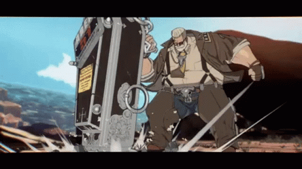

The right-hand man of the United States president and a man of great strength and tactics, he is the secretary of defense, Goldlewis Dickinson. While not much is known of his past, he continues to carry on his task of protecting the president and carrying out whatever job he is given, crucial to protecting the country and its people. He uses an assortment of deadly weapons and gadgets to fight his enemies, becoming a one-man army when pushed to his limit. What lies in that coffin he carries around seems to be a creature of mysterious origins.
